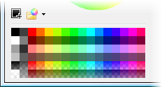
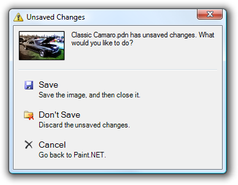

What's New
Paint.NET v3.0 introduces several new features:
-
Multiple Document Interface ("MDI")
This has been the #1 requested feature of Paint.NET over the last few years. You can now open multiple images in the same instance of Paint.NET. A thumbnail for each image is displayed in the upper right section of the main window. It works much like your tabbed web browser: click on an image to switch to it, or use Ctrl+Tab and Ctrl+Shift+Tab for keyboard navigation.

-
Gradient Tool
The #2 most highly requested feature has also been added to Paint.NET: gradients. The new Gradient tool is easy to use and provides a level of interactivity that surpasses most professional imaging software. You can use it to draw color gradients, or to apply a transparency fade.

- Color Palette
New for the Colors window is a customizable palette that can hold up 96 colors. Also available is the ability to save, load, and manage the color palettes. These are stored as simple TXT files in your Documents folder hierarchy.
 -
Better User Interface
Many parts of the user interface have been cleaned up, simplified, or just plain improved. For instance, the toolbar now only shows controls that are relevant to the currently active tool. Based on user feedback, we have also optimized the toolbar layout to eliminate some issues which were accidentally causing lower drawing quality (such as inadvertently disabling antialiasing or alpha blending). Some parts of the user interface have even been removed in order to simplify workflow and reduce annoying confirmation dialogs. "Task dialogs" and "command links" are also being employed in order to provide dialogs that are simpler and provide more relevant responses than the forced "Yes, No, Cancel" buttons of many user interfaces.
 -
New Effects
The following new effects have been added: Clouds, Outline, Median, and Unfocus. Improvements have also been made to the Sharpen effect.

-
Compressed History
Paint.NET now compresses the files that store history data. This can result in a substantial reduction in required disk space, and better performance due to less hard drive activity. Note that this requires that your hard drive is using the NTFS file system, and not FAT32.
Copyright © 2007
Rick Brewster, Tom Jackson, and past contributors. Portions Copyright
© 2007 Microsoft Corporation. All Rights
Reserved.